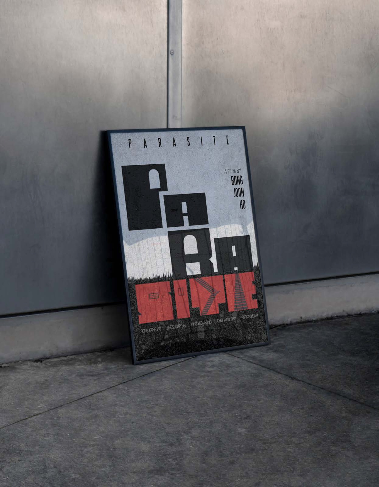

PHAM Nhu Quynh
Contact
PHAM Nhu Quynh
Contact

“Movie Poster”: ParasiteMetaphor-based & Typography-based poster
Adobe Photoshop
« Affiche de film » : ParasiteAffiche métaphorique et typographique
Adobe Photoshop
Para site

Intention
This poster reimagines Parasite through minimalist metaphors, highlighting class disparity and social invisibility. The word is split into “PARA” (light, above ground) and “SITE” (dark, underground), symbolizing the divide between the Park and Kim families. Bold block typography evokes concrete structures and class rigidity, while color contrast underscores the tension between wealth and poverty.
Cette affiche réinterprète Parasite à travers des métaphores minimalistes, pour souligner les inégalités de classe et l’invisibilité sociale. Le mot est scindé en « PARA » (clair, au-dessus du sol) et « SITE » (sombre, sous terre), symbole de la fracture entre les familles Park et Kim. La typographie en blocs massifs évoque le béton et la rigidité des classes sociales, tandis que le contraste des couleurs souligne la tension entre richesse et pauvreté.